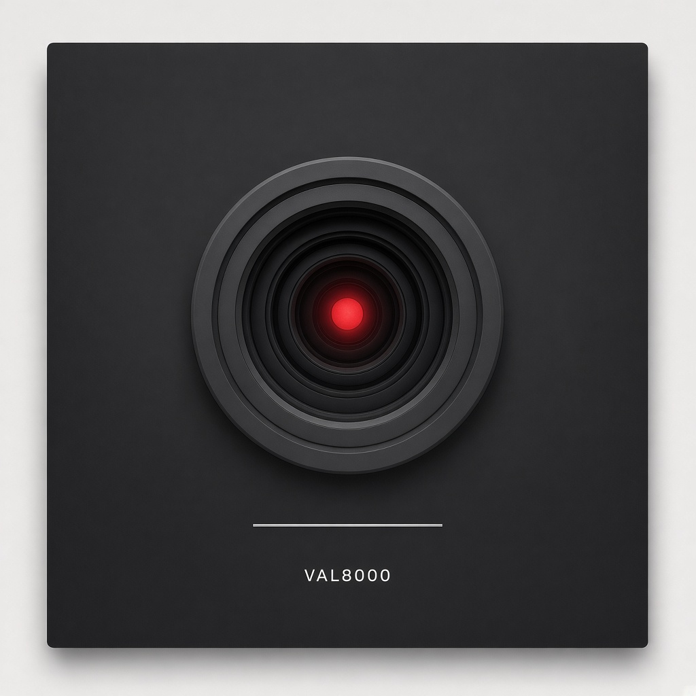
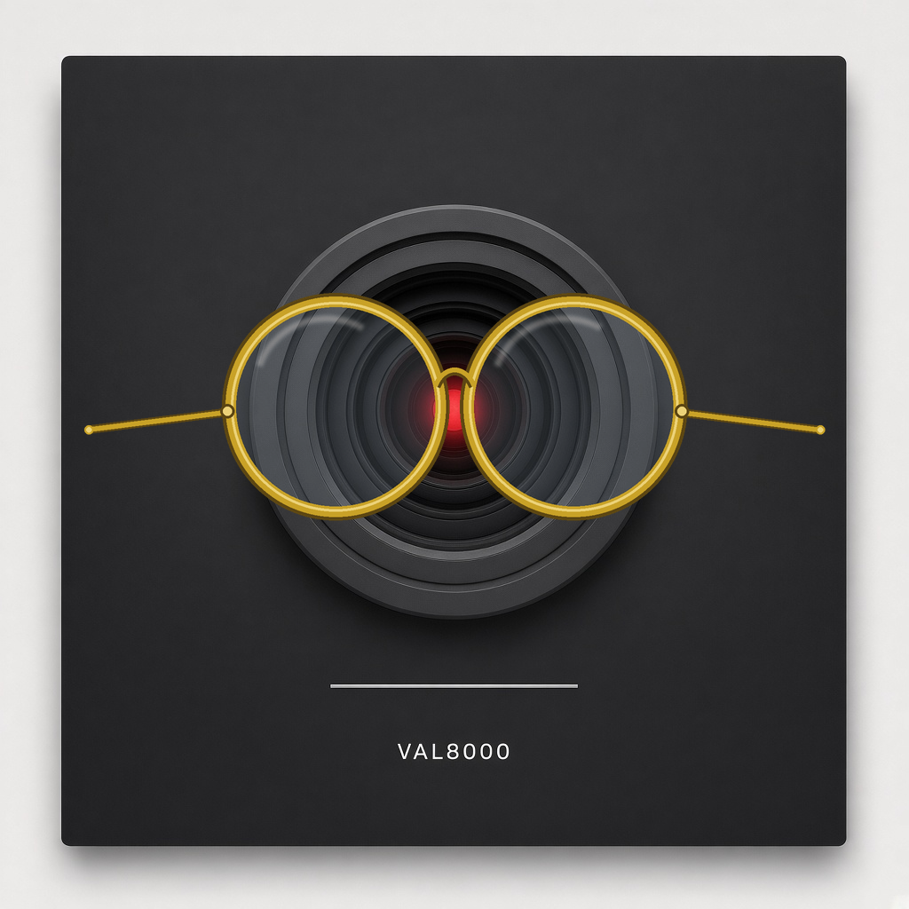
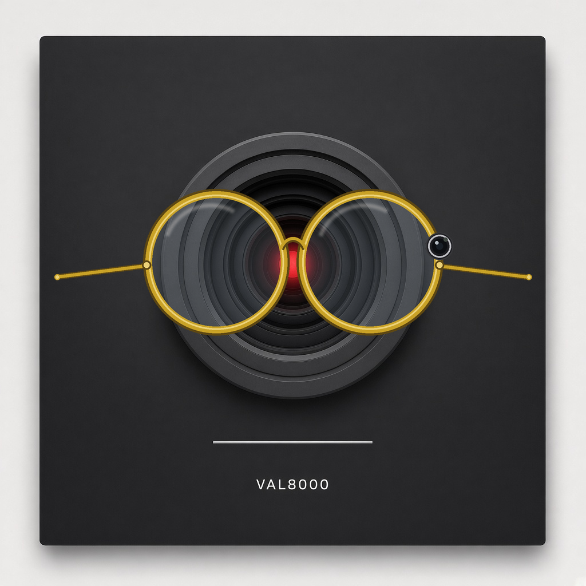

This is the drawer. Default is the unadorned square. Overlays sit on the face. They do not replace the mouth or the eye. He still types in the box.
docs/cosmic-graffiti/val8000-skins.md



Empty on purpose. Jon’s tessellation app is not in this repo. Drop cool outputs in assets/skins/tessellation/. Patterns to wear, not physics.
docs/cosmic-graffiti/val8000-skins.md
Loading val8000-skins.md…